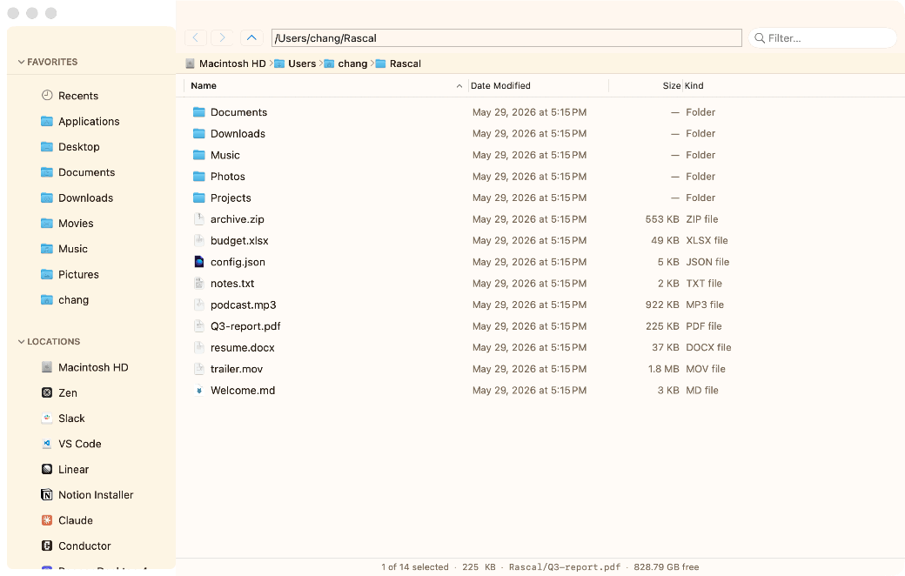
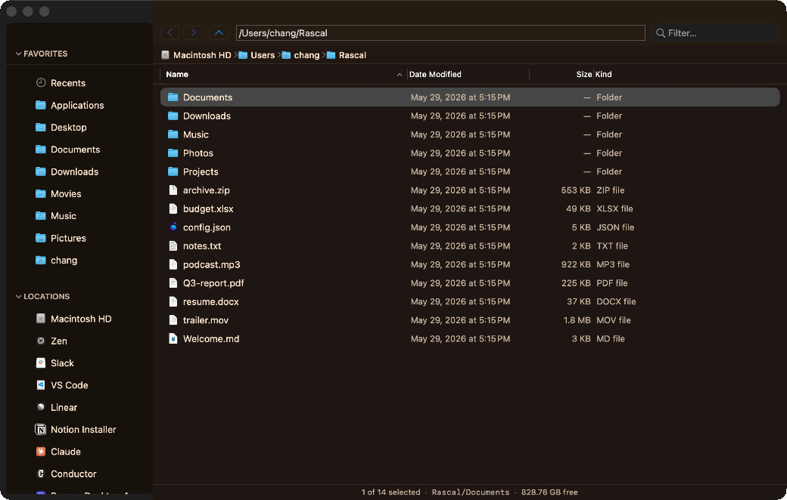
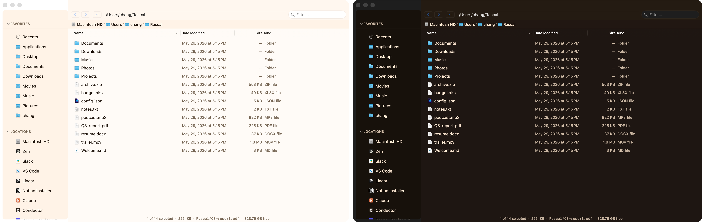
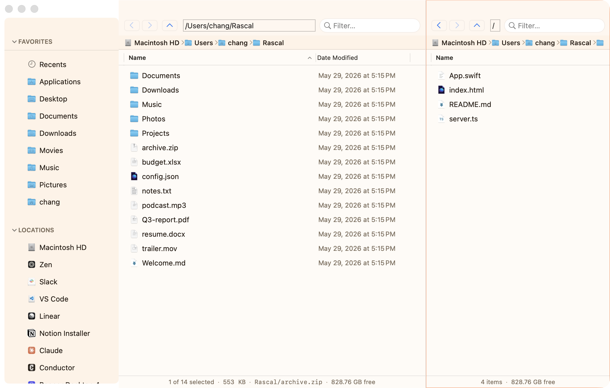
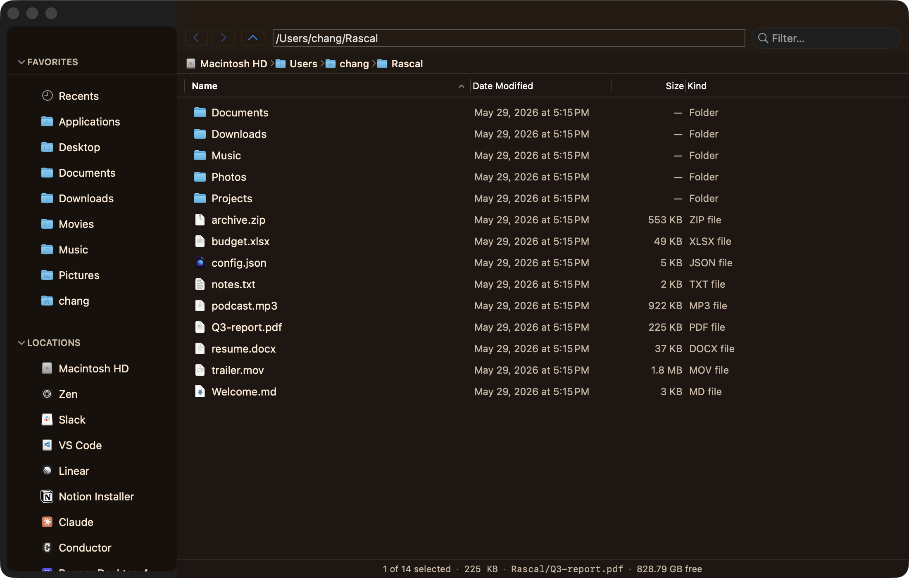

⌨️
Keyboard-first
A fuzzy command palette (⌘⇧P), full vim navigation (hjkl, /, dd, gg), and every shortcut remappable.
macOS file manager · keyboard-first
A fast, native Finder replacement that gets out of your way — vim keys, a command palette, dual panes, live themes, and a treemap that finally tells you where your disk went. Local-first. No AI. No account.

What's inside
A fuzzy command palette (⌘⇧P), full vim navigation (hjkl, /, dd, gg), and every shortcut remappable.
Dual panes with synchronized browsing, tabs, and List / Icon / Column / Gallery views — switch instantly.
A cinematic, color-by-type treemap shows exactly where your space went. Click to drill in, ← / → to retrace, hover for the read-out.
Ten built-in themes and a portable JSON format — author your own and drop it in. Consistent across every panel.
Read/write Finder tags and save searches as smart folders that live in your sidebar.
A pausable transfer queue, conflict-aware merges, and undo/redo for moves, copies, and trashes.
Browse zip/tar without extracting, and run one- or two-way folder sync with a visual diff.
Mount SFTP / SMB / FTP / WebDAV as sidebar volumes, and extend Rascal with JavaScript plugins.
See it in action
Real captures, straight from the app.


j/k to move



No paywalls, no subscriptions, no tracking. If Rascal saves you time, a tip on Ko-fi keeps it caffeinated and improving.
Buy me a coffeeGet Rascal
Universal build for Apple Silicon & Intel. Requires macOS 13 Ventura or later.
Download Rascal.dmgor build it yourself
git clone https://github.com/chang-07/finder-2.git
cd finder-2
./setup-signing.sh # one-time: stable signature so macOS remembers permissions
./install.sh # builds + installs to /Applications